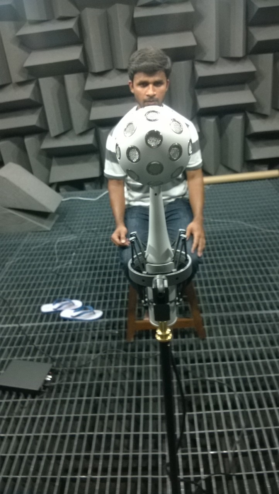
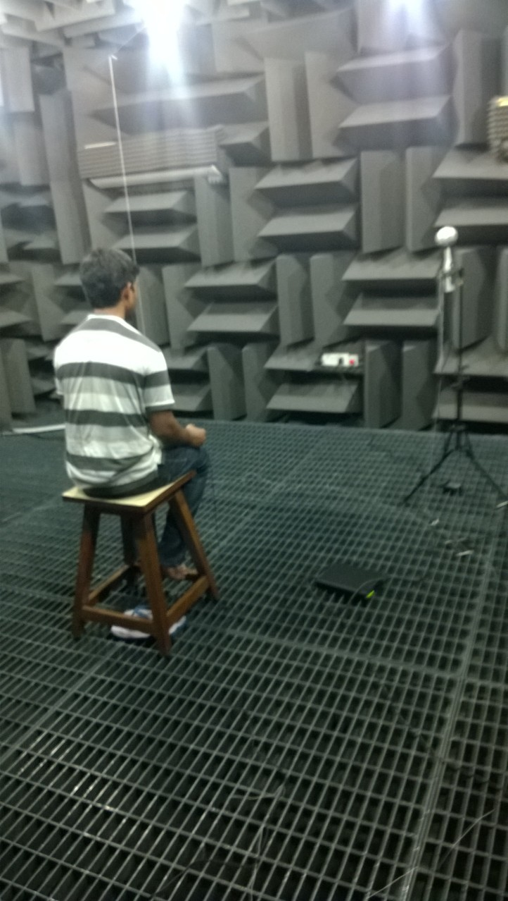
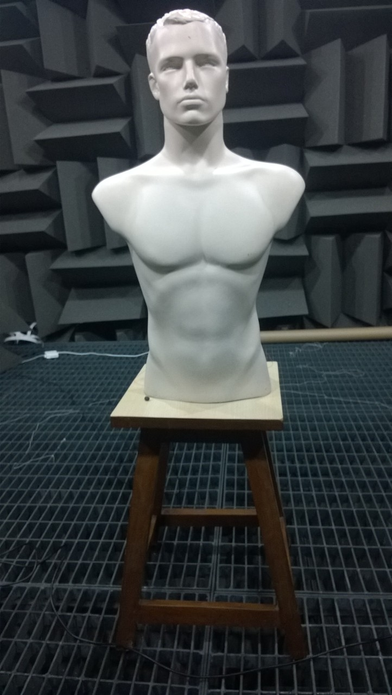
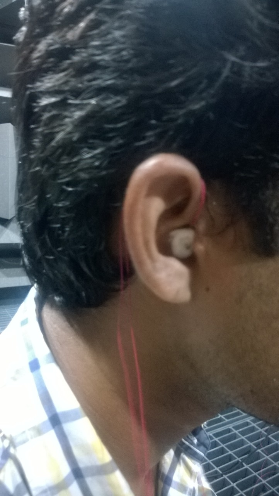

Spatial Audio has been an emerging field for the past half-century. But path breaking developments in the last decade, coupled with computing prowess has resulted in rapid advancements in this field. With the advent of virtual reality and its merger with day-to-day activities, Spatial Audio (a.k.a 3D Audio) comes as yet another addition to make virtual reality closer to actual reality.
What do we do?
Modelling various body parts to understand synthesis and analysis of various sensory signals has been a common approach. We combine this with the state-of-the-art hardware to obtain measurements with the least distortion possible. Finally with sofisticated mathematical techniques we try to obtain a general mapping between the anthropometry of the ear and HRTFs (Head Related Transfer Functions - signal processing descriptor of the ear model). All in all we carry a long-term goal to personalize spatial audio for a given individual with the click of a button!!!
A glimpse of the lab

Fig.1: Recording HRTF of a given person using a spherical microphone array

Fig.2: HRTF recording with a better view of the anechoic chamber

Fig.3: Manequin with torso and head, also used for recording HRTFs

Fig.4: Micro-Speakers installed in the ear canal, used to generate impulses.
Related Publications (in reverse chronological order)
Ayushi Singhal, Sandeep Reddy, and R. M. Hegde,
Computing HRTFs using Spherical Nearfield Acoustic Holography for rendering Spatial Audio Submitted to Proceedings of the IEEE International Conference on Acoustics, Speech, and Signal Processing (ICASSP), IEEE, Brisbane, Australia, 2015
(under review)
[Demo]
Chaitanya Ahuja, and R. M. Hegde,
Fast modelling of Pinna Spectral Notches from HRTFs using Linear Prediction Residual Cepstrum,
Proceedings of the IEEE International Conference on Acoustics, Speech, and Signal Processing (ICASSP), IEEE, Florence, Italy, 2014
[IEEE Xplore][Poster]
A. Sohni, Chaitanya Ahuja, and R. M. Hegde,
Extraction of pinna spectral notches in the median plane of a virtual spherical microphone array,
4th Joint Workshop on Hands- free Speech Communication and Microphone Arrays (HSCMA 2014) Nancy, France
[IEEE Xplore][Poster]